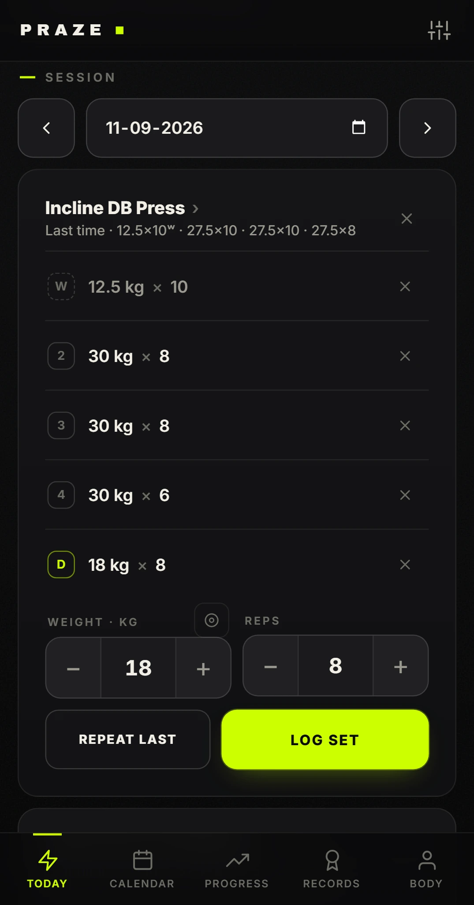
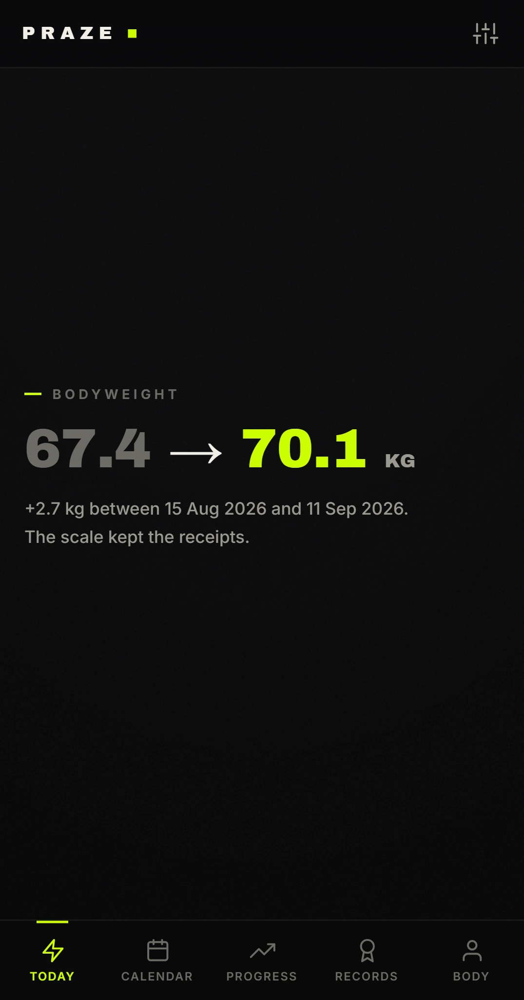
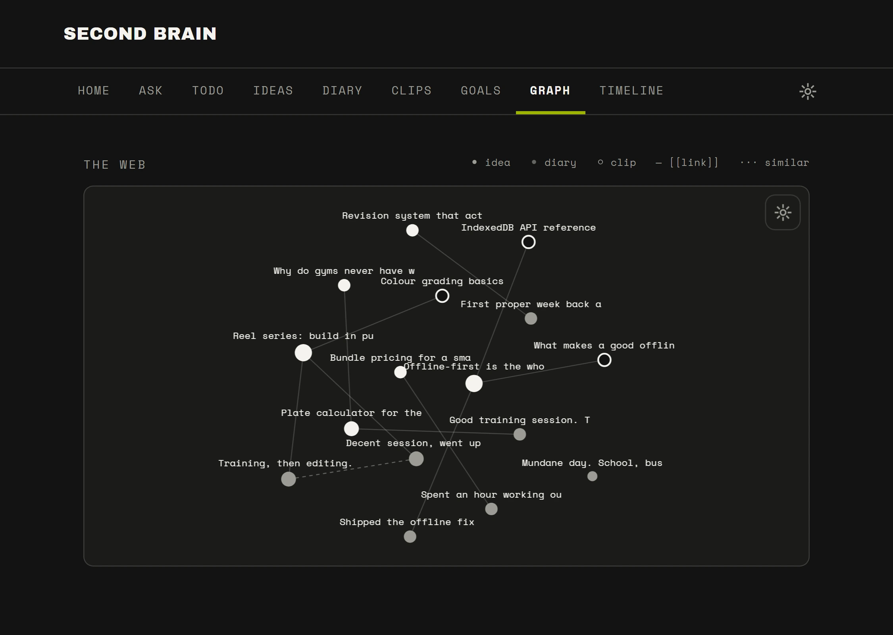
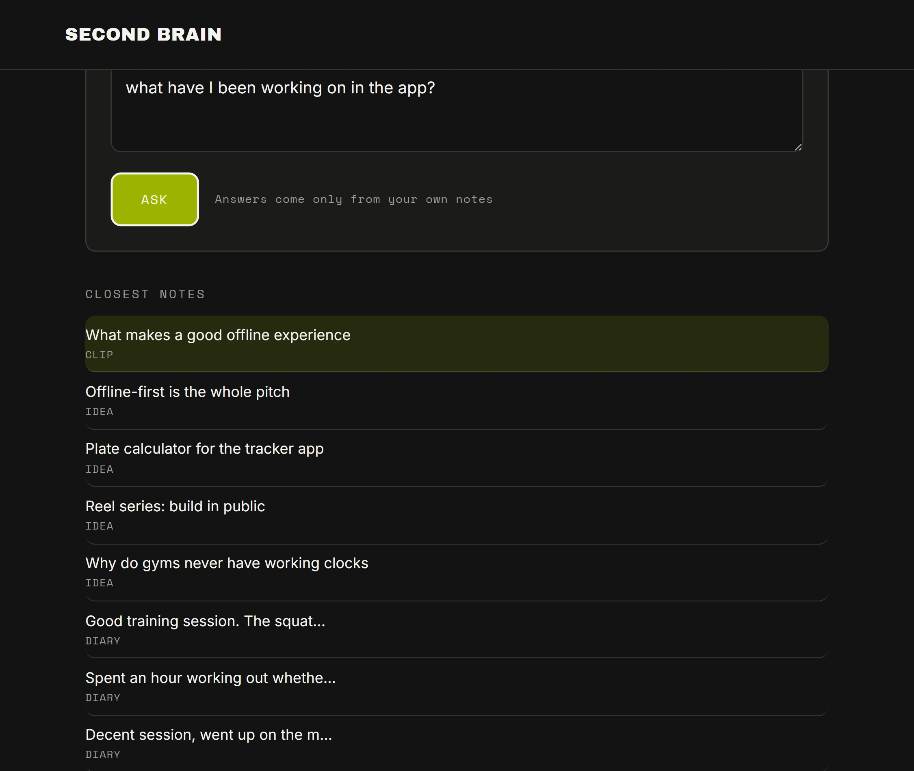

I'm 16 and still in school. I'm building PRAZE, a
self-improvement brand covering fitness, business, and content.
Two offline-first apps I use every day. A content brand I built from
zero, and an automated video pipeline to scale it. Everything in the
Work section is already running.
Studying
AS Level — English, Chemistry, Biology, Business
Applying to
Business & entrepreneurship programmes
Building
PRAZE — fitness, business, content
Currently: finishing AS Levels, training, and building
whatever's next for PRAZE.
Four projects, all self-directed. Each one exists because I needed it
and nothing off the shelf did the job.
01
PRAZE Fitness Tracker
3 iterations · Offline-first · Android
HTML / CSS / JSIndexedDBPWACapacitor / AndroidOffline-firstNo build stepLive
What it is
A fitness tracking web app that lives in a single HTML
file. No build step, no server, no account. It loads
once, then works completely offline. That last part is the whole
point, because gyms have no signal.
Why it matters
I didn't build this once and call it done. Three iterations,
each one driven by something that annoyed me mid-workout.
Use it, find the gap, ship the fix. That loop
is the part I care about.

Logging · tagged sets (sample data)

Journey · progress over time (sample data)
What I built · three iterations
v1Core tracker
Logging workouts, exercises, sets, reps, and weight. The smallest version that was actually useful.
v2Persistence and portability
Durable local storage with IndexedDB. PWA install support, so
it sits on the home screen. Rest timers between sets, a kg/lb
unit toggle, and reusable training templates.
v3Progression intelligence
Exercise set tagging, a plate calculator, a "Journey" view for
progress over time, personal records tracking, estimated
one-rep max (e1RM) calculation, and milestone celebrations.
+Native Android
Wrapped with Capacitor into an installable Android app, with
custom icons and a splash screen.
A personal knowledge management app: notes, diary, idea capture,
and goal tracking in one offline-first tool. No account,
no server, no API key. Every core feature works with the
network switched off.
Why it matters
Most note apps keep your notes on someone else's server, behind
a login and a subscription. This one runs on my machine and
answers questions from my own notes without a single network
call.

Knowledge graph (sample data)

Offline Ask · local retrieval (sample data)
What I built
TF-IDF auto-linking finds related notes by content similarity, so connections show up without me tagging anything by hand.
Wiki-style linking and a visual knowledge graph with pan and zoom, so I can see how ideas cluster.
Local retrieval-based "Ask" answers questions from my own notes entirely offline. There's an optional AI-powered mode when I want it.
Command palette (Cmd+K) for keyboard-first navigation, and voice dictation for diary entries.
Shipped across multiple pull requests, all merged and live, in reviewable increments rather than one dump of code.
Custom colour system · ffmpeg grading · Film grain and vignette
Brand identityffmpegColour gradingShort-form video
What it is
A content brand I started from zero, with a dark, cinematic
visual identity built around one line:
"BUILT NOT BORN."
Why it matters
It documents my own journey building PRAZE in public: training,
building, and business progress as one continuous
story. Making something is half the job. Distribution is
the other half, and you only learn that by doing it in the open.
What I built
A custom colour system and visual language applied consistently across every piece of content.
Reels shot and edited myself, with professional colour grading, film grain, and vignette applied through ffmpeg. The look is a repeatable process, not a filter I clicked once.
04
Vertical Reel Production Pipeline
Local speech-to-text · Word-level captions · Remotion
TypeScriptRemotionwhisper.cppAutomation
What it is
An automated pipeline for producing vertical short-form video,
built in TypeScript with Remotion. Video is
rendered from code instead of assembled by hand
in an editor.
Why it matters
Manual editing puts a hard ceiling on how much I can publish. I
built this to scale content production for @praze_ig
past what my own editing hours allow. It turns a creative
bottleneck into an engineering problem.
What I built
Automatic speech-to-text captioning via whisper.cpp, which runs locally.
Captions synced word by word to the video. That timing style is what short-form platforms reward.
Programmatic caption rendering, so styling is defined once in code and applied to every video.
02 / Before PRAZE
Before PRAZE
Three things that happened before any of this existed. Not all of
them worked.
03 / Skills
What I can actually do
All of this came from building the projects above, not from a course.
Full-stack web development
HTML, CSS, JavaScript
TypeScript
Offline-first architecture
IndexedDB & local persistence
Progressive Web Apps
Capacitor (web → Android)
Git & pull-request workflow
Content production
Video editing & colour grading
ffmpeg
Remotion (video from code)
whisper.cpp captioning
Visual branding & colour systems
Short-form / vertical formats
Business fundamentals
Sourcing & supplier negotiation
Pricing & margin
Inventory & reinvestment
Brand positioning
Audience building
Shipping to a real deadline
04 / Contact
Get in touch.
Happy to talk about any of the projects above, or about studying
business and entrepreneurship.